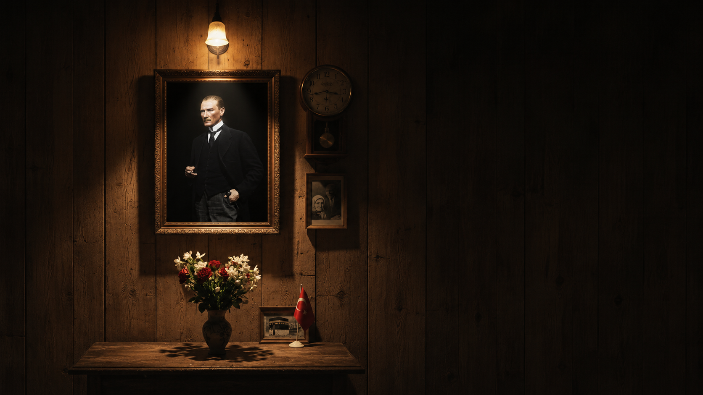

Günlük sıcak

Atamıza saygıyla
Tomris Restoran
Türk mutfağının tanıdık lezzetleri, aynı sofrada özenle buluşuyor.
Tomris'in sofrası
Geçmişe saygı,
sofrada özen.
Tomris, Türk mutfağının klasik lezzetlerini özenle hazırlanan tariflerle sofranıza taşır.
Çorbadan tatlıya her tabak, misafirlerimizin kendini evinde hissetmesi için aynı dikkatle hazırlanır. Sade sunum, tanıdık tat ve sıcak bir sofra kültürü bu mutfağın temelini oluşturur.
“Türk mutfağının zarafeti, aynı sofrada.”
Tomris Restoran
Bizi ziyaret edin
Aynı sofrada
buluşalım.
Rezervasyon ve konum bilgileri kesinleştiğinde bu bölümde doğrudan telefon ve harita bağlantıları yer alacaktır.
Konum
Çankaya / Ankara
Açık adres bilgisi güncellenecek.
Rezervasyon
Telefonla rezervasyon
Rezervasyon hattı güncellenecek.
Çalışma saatleri
Her gün
11.00 – 23.00